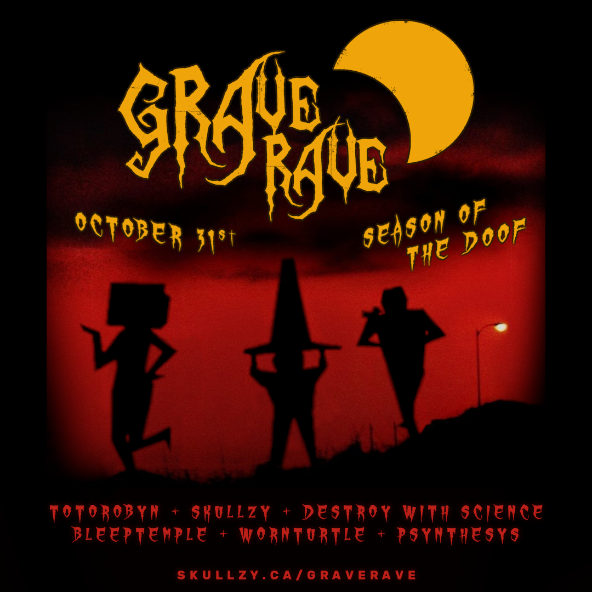
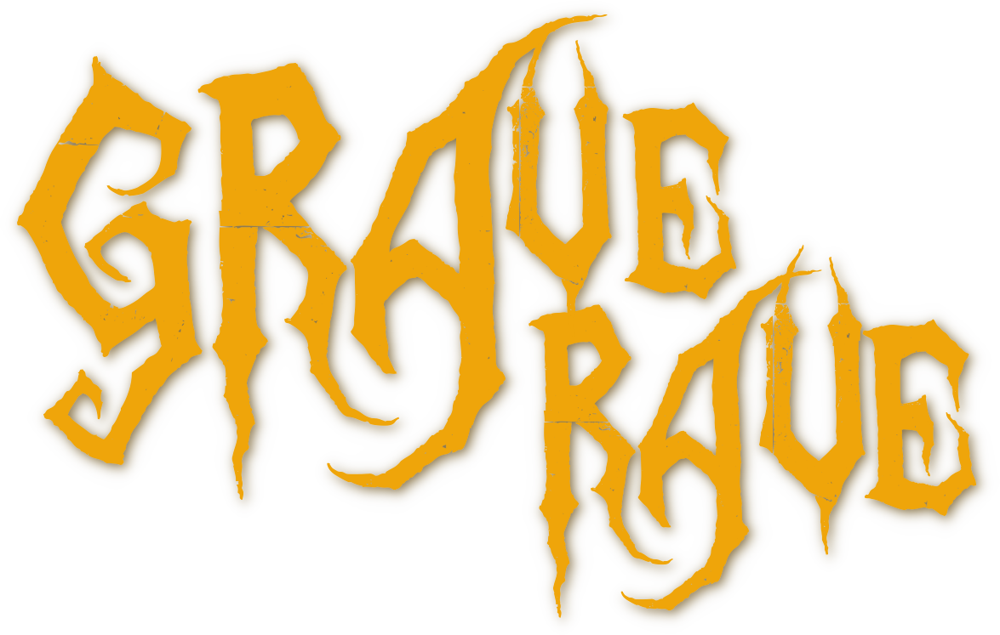
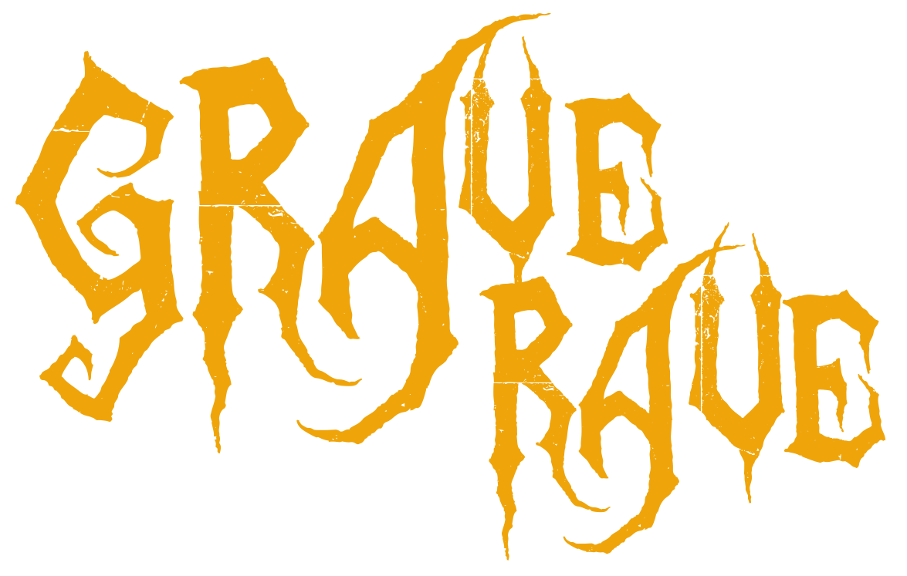
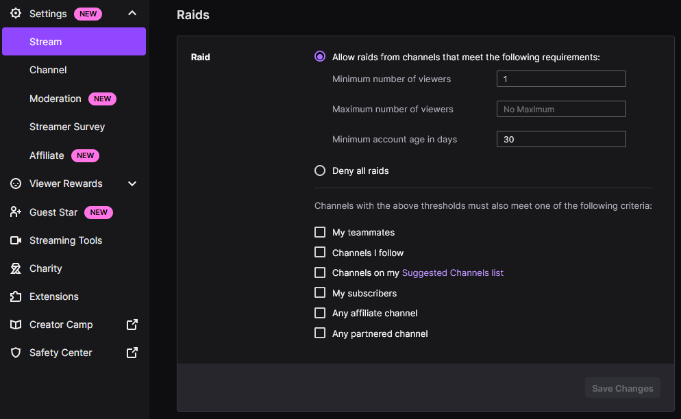
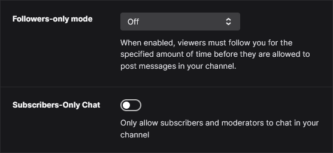
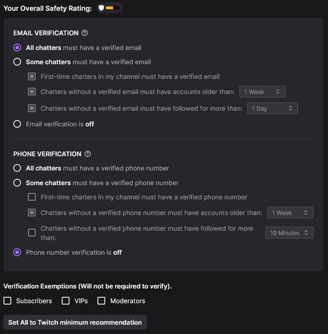

Grave Rave Backstage
Cyberdoof Overlay Setup
A URL for an OBS browser will be provided the day of the event. This is optional by highly encouraged since it will display what is happening inside the party space.
- OBS > Sources > Add > Browser
- Enter the overlay URL into the browser source
- Width: 1920, Height: 1080
- Resize and crop the browser source to fit your scene
Branding
-
Include
Grave Rave 2025 - Season of the Doofsomewhere in your stream title. - Include the cyberdoof invite link somewhere your chat can see it during your stream. https://skullzy.ca/doof
- Include a link to the official landing page when promoting the event. https://skullzy.ca/graverave
Image Assets



Raid Train Protocol
- Start your stream at least 5 minutes early.
- Ensure the person playing directly after you is live and ready before raiding.
- Turn off chat restrictions. See below for more details.
Raid Restrictions
-
Turn off any raid restrictions to prevent issues furing the event.
Screenshot

Chat Restrictions
-
Turn off follower-only mode and subscribers-only chat.
Screenshot
 -
Set verification to Twitch minimum recommendation or less. Phone verification in particular can be problematic for people and it is recommended to turn it off entirely.
Screenshot
